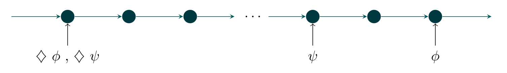

A Brief Review on Temporal Logic Models
We need to define the semantics of the LTL operators. In this way, we show a brief review of LTL semantics, for a deep introduction to Temporal Logic you can see Fisher. The following finite model of time for the next in the future operator. This operator provides us the ability to represent properties that will be true at the next moment, from the moment when the next operator was evaluated.
Analogous, the following finite model of time for the eventually in the future operator, let us represent properties that are true at some point in time from now. We know that they will be true, but we do not know when they will be.
Alike, the following finite model of time for the always in the future. This operator gives us the control to represent properties that are true at all moments in time from now on.
Likewise, there are different patterns (combinations of temporal operators) that are remarkable, take a look at the following models:
Those are behaviors that we have to take into account because a naive implementation of those patterns will become in a bad interpretation of LTL semantics. The evaluation of the first formula □(ΟΦ) implies that at every moment (after the evaluation) ΟΦ must be true. This means that Φ must be true after the second moment when the whole formula was evaluated. The evaluation of the second formula ◇(Ογ) implies that after the moment when the formula has evaluated there is a moment where the formula must be true. That is to say, the formula γ must be true after the second moment since the whole formula has been evaluated. For this reason the operations heredity.
LTL Semantics
We use LTL operators to specify behavior, the data flow throughout the execution system and constraints in the base application. The module LTL defines the temporal logic operators as Maude operations. Notice that LTL operators are defined as operations whit domain is LTL and which range is LTL (i.e they received LTL formulas and produce new LTL formulas).
~_ Logical complement.
op ~_ : Ltl -> Ltl [ctor prec 53 format (r o d)] .
_/\_ Logical conjunction.
op _/\_ : Ltl Ltl -> Ltl [comm ctor gather (E e) prec 55 format (d r o d)] .
_\/_ Logical disjunction.
op _\/_ : Ltl Ltl -> Ltl [comm ctor gather (E e) prec 59 format (d r o d)] .
_->_Logical implication.
op _->_ : Ltl Ltl -> Ltl [gather (e E) prec 65 format (d r o d)] .
_<->_Logical equivalence.
op _<->_ : Ltl Ltl -> Ltl [prec 65 format (d r o d)] .
O_ Temporal operator next.
op O_ : Ltl -> Ltl [ctor prec 53 format (r o d)] .
E_ Temporal operator eventually.
op E_ : Ltl -> Ltl [prec 53 format (r o d)] .
[]_ Temporal operator always in the future.
op []_ : Ltl -> Ltl [prec 53 format (r d o d)] .
As we mentioned above, we defined the semantics of LTL formulas using the operation code> heredity and verification. This operation recurs over the structure (syntax tree) of the LTL formula up to the base cases: Predicates and Constants. Moreover, the propositional logic semantics is defined as usual, for more detail you can see the entire Temporal-logic.maude file . The operation verification has two arguments the LTL formula and the configuration where the formula want to be evaluated, notice that different configuration generate different results for the same formula.
op heredity : Ltl Ltl -> Ltl .
op verification : Ltl Configuration -> Ltl .
var Con : Configuration .
vars LT LT' LT'' : Ltl .
var PR : Pred .
eq verification(true,Con) = true .
eq verification(false,Con) = false .
eq verification(~ LT,Con) = ~ verification(LT,Con) .
eq verification(LT /\ LT',Con) = verification(LT,Con) /\ verification(LT',Con) .
eq verification(LT \/ LT',Con) = verification(LT,Con) \/ verification(LT',Con) .
eq verification(LT -> LT',Con) = verification(LT,Con) -> verification(LT',Con) .
The semantics for LTL operators is quite different. Each time that a next operation is evaluated Ογ, the formula is changed to γ in this way the next moment the formula that must be evaluated γ. Each time that an eventual operator is evaluated ◇γ the value of the formula γ is verified, if it is true ◇γ is evaluated as true and if it is false the formula no change in order to be evaluated at the next moment. Finally, evaluate a □γ formula implies to evaluate the formula γ if it is false □γ is evaluated as false if it is true the formula no change in order to be evaluated at the next moment.
eq verification(E(LT),Con) = if verification((LT),Con)
then true
else E(LT)
fi .
eq verification(O(LT),Con) = LT .
eq verification([](LT),Con) = if (verification(LT,Con) == false)
then false
else [](LT)
fi .
All the more, as is mention above, the semantics for the remarkable patterns is taking into account, in this way we define the operation heredity. For the pattern □(Ογ) the first argument keeps the information of the formula while the second argument keeps the formula Ογ to be evaluated at the next moment. For the other remarkable pattern, the operation heredity works in the same way.
eq verification([](O(LT)),Con) = heredity([](O(LT)),O(LT)) .
eq verification(heredity(LT,O(LT'))) = heredity(LT,LT') .
eq verification(heredity(LT,LT'),Con) = if (verification(LT',Con) == false)
then false
else heredity(LT,LT')
fi .